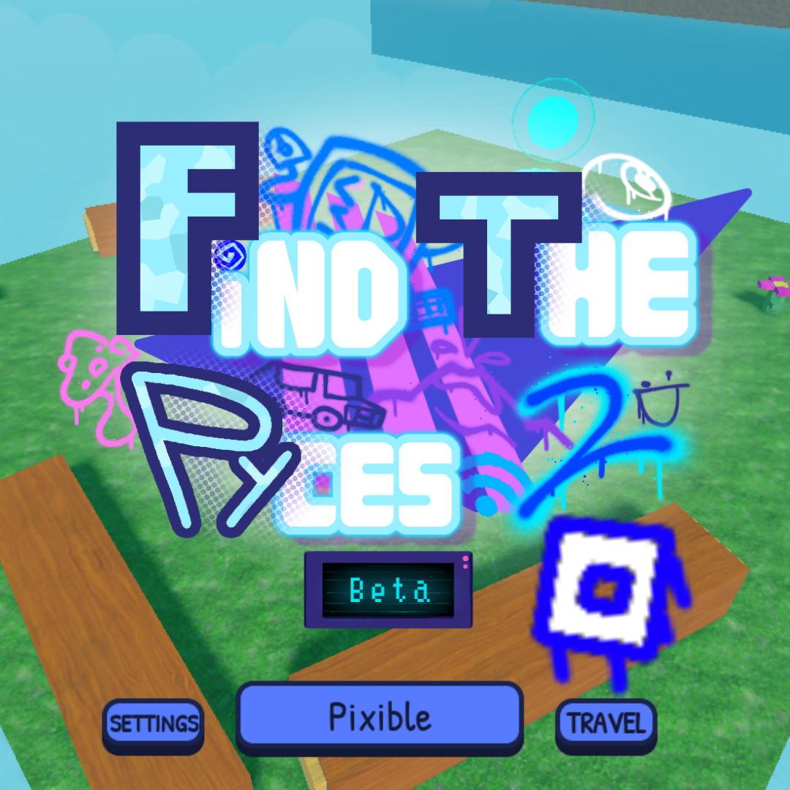

Normal Pyce with no modifications. No difficulty.
Visible and predictable Pyces. Ideal for beginners.
Diverse Pyces with simple but varied patterns.
Intermediate challenge between Medium and Hard.
High difficulty but without extreme mechanics.
Pyces with scripts or advanced methods.
Requires advanced tricks or external knowledge (e.g., binary).
Maximum difficulty. Grants the badge "An Ultra in Bitlands (AUiB)".
Always obtainable Pyces, but through special means like badges, gamepasses, or game achievements.
Exclusive Pyces from temporary events (Christmas, Easter, Anniversary, etc.). Only available during their event.
Unique Pyces that cannot be obtained again. Some were from events, others are permanent but unique (e.g., BETA).
📌 Note: In FtPy2, the "Award" category from the prequel is now integrated into Reward. Event Pyces are just Event.